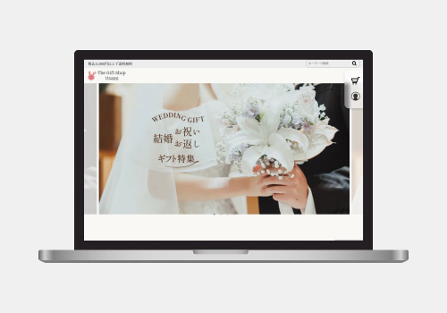
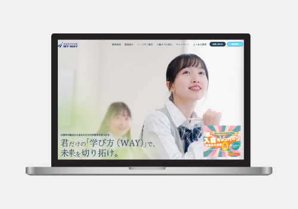
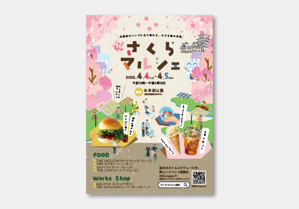
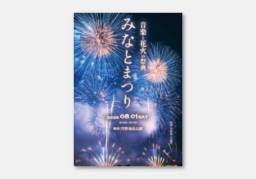

これからしていきたいこと
一つひとつの業務や商品に込められた思いを深く汲み取り、それをユーザーにとって最も伝わりやすい形で表現できるデザイナーを目指しています。「伝えたい情報は何か」「課題は何か」という本質を常に問い続け、多くの人と対話を重ね、クライアントの想いとユーザーのニーズを繋げるような「ものづくり」をしていきたいです。
Portfolio
Yuzu Aoki
デザインにおいて、私が最も大切にしているのは、「ユーザーの抱える課題に寄り添う」という視点です。単に情報を伝えるだけでなく、ユーザーの特性や課題に合わせて、心地よいと感じる配色や、デザインの表現の工夫、スムーズなサイト誘導を意識し、前職で培った「どのように表現すれば、相手に伝わるか」を考え、一つひとつの表現に根拠を持って制作に取り組んでいます。
一つひとつの業務や商品に込められた思いを深く汲み取り、それをユーザーにとって最も伝わりやすい形で表現できるデザイナーを目指しています。「伝えたい情報は何か」「課題は何か」という本質を常に問い続け、多くの人と対話を重ね、クライアントの想いとユーザーのニーズを繋げるような「ものづくり」をしていきたいです。
2019年4月
地元である兵庫県から上京し、大学で栄養学を学んでまいりました。マーケティング企画やメニュー開発の授業が好きで、「じゃがいもに含まれるアントシアニンを活かしたお菓子の企画開発」をテーマに卒業研究を行なっていました。コロナ禍の中、少しでも人々の交流の場を作りたいという思いから、「体に優しい生活」をテーマに、20代向けに1日限定カフェを東京(国分寺)で開催しました。
2023年3月
2023年4月
子どもが楽しんで食事ができるような献立作成、食育活動を行なっていました。
2024年10月
兵庫県に戻り、大学事務職員として転職。高校生に向けた大学紹介PR活動やパンフレット制作、チラシの制作などを行なっておりました。将来に対して不安を持っている高校生に対して、自分のやりたいことを見つけて欲しいという思いから、一方向の説明ではなく、グループワークなど対話できる機会を多く取り入れた説明にし、生徒自身が自分の個性や特性を見つけられるように、一人ひとりと真摯に向き合い仕事に取り組んでおりました。
2025年12月
高校時代からヨーロッパの文化や世界遺産に興味があり、いつか行ってみたいと思っていた海外に勇気を出して1人旅にいきました。旅行中に風邪を引くというトラブルにも苛まれながらも、初めて見る景色や、海外の空気に触れ、あれほど物事に挑戦するハードルが高く、なかなか一歩踏み出せなかったものも、少しの勇気で自分の考え方や意識も広がっていくことを実感し、自分をより深く知るきっかけとなりました。それがきっかけとなり、長年憧れていたデザイナーという仕事に挑戦したいという想いが確信に変わり、WEBデザインの職業訓練に通うことを決めました。
2026年1月
Illustrator、Photoshopを使用したバナー制作、DTP制作、デザインの考え方を学んでいます。Figma、HTML、CSS、WordPressを使用してユーザーの課題を解決するWEBサイト制作に取り組み、日々の学びを実践で活かせるように取り組んでいます。
Works

ECギフトショップのサイトリニューアル（架空）

英語特化型塾のサイト（架空）

さくらマルシェイベントのチラシ（架空）

20~30代若年層向けの夏祭りのチラシ（架空）